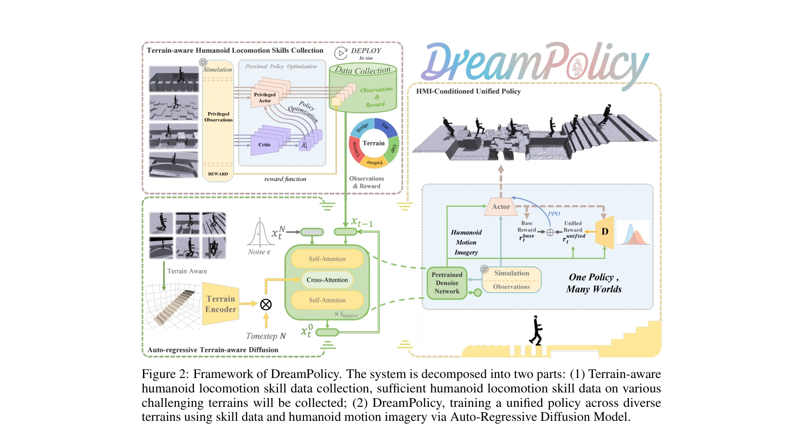
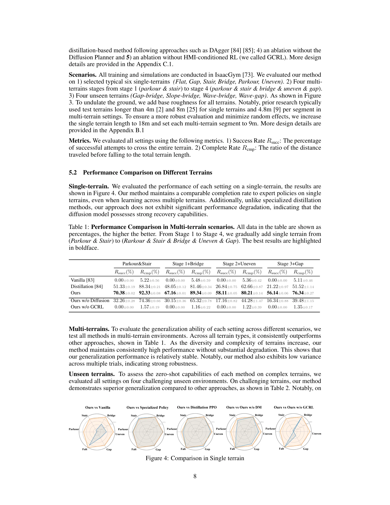

저자: Yahao Fan, Tianxiang Gui, Kaiyang Ji, Shutong Ding, Chixuan Zhang, Jiayuan Gu, Jingyi Yu, Jingya Wang, Ye Shi | 날짜: 2025-05-24 | URL: https://arxiv.org/abs/2505.18780

Figure 2: Framework of DreamPolicy. The system is decomposed into two parts: (1) Terrain-aware
DreamPolicy는 Humanoid Motion Imagery (HMI)를 생성하는 terrain-aware autoregressive diffusion planner와 HMI-conditioned RL policy를 결합하여, 단일 정책으로 다양한 지형에서 humanoid 로봇의 이동을 학습하고 미지의 시나리오로 zero-shot 일반화를 달성하는 통합 프레임워크이다.

Figure 4: Comparison in Single terrain
Figure 2: Framework of DreamPolicy. The system is decomposed into two parts: (1) Terrain-aware
총평: DreamPolicy는 offline data와 diffusion-based trajectory synthesis를 통합하여 humanoid 이동의 확장성 문제를 창의적으로 해결하고, 실제 로봇 응용에 실질적 가치를 제공하는 강력한 프레임워크이다. 다만 sim-to-real 검증과 computational 효율성 분석이 보완되면 더욱 견고한 기여가 될 것이다.